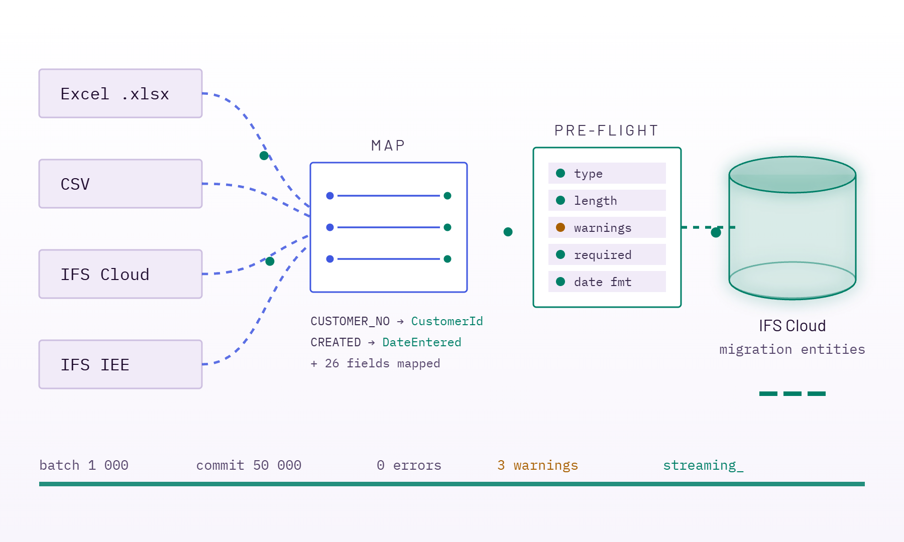
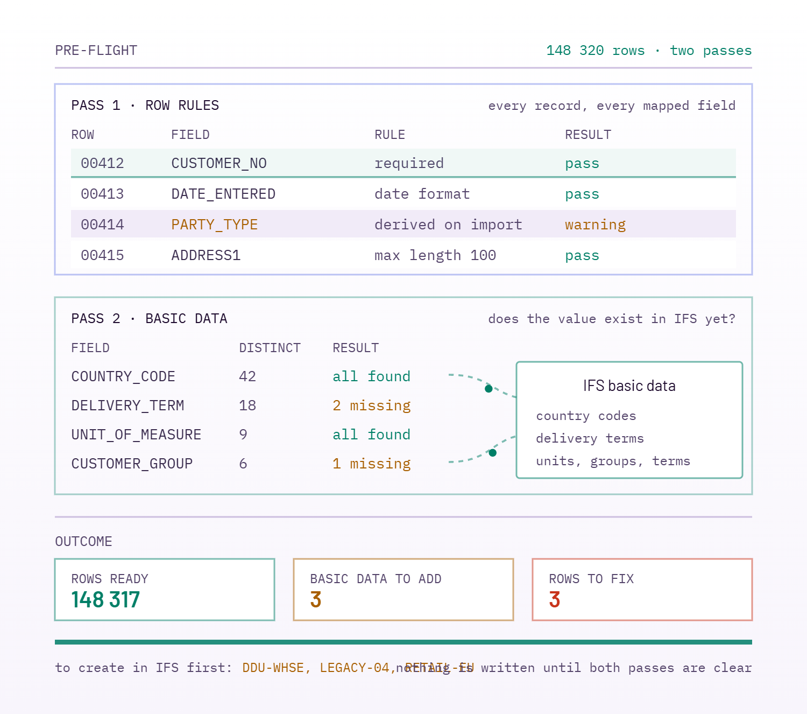
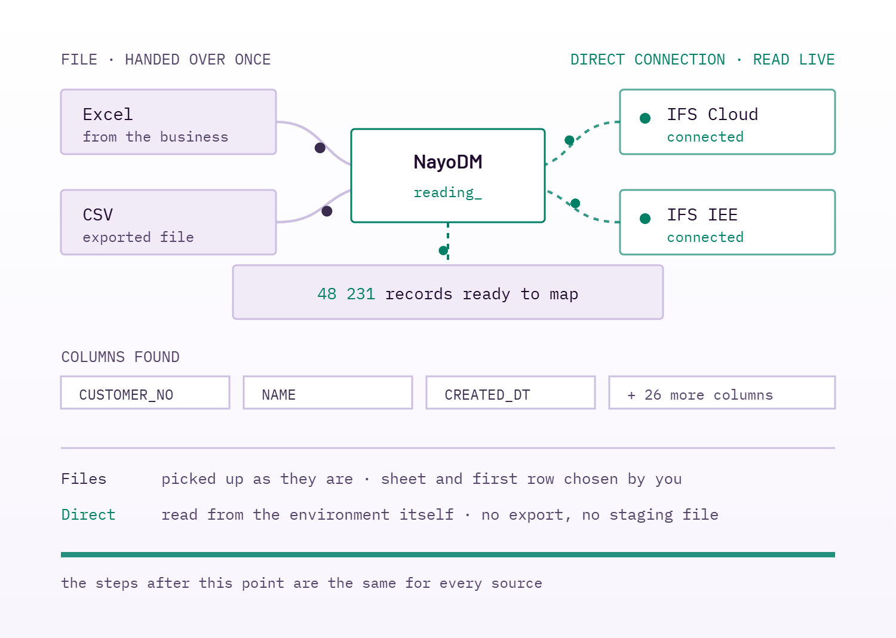
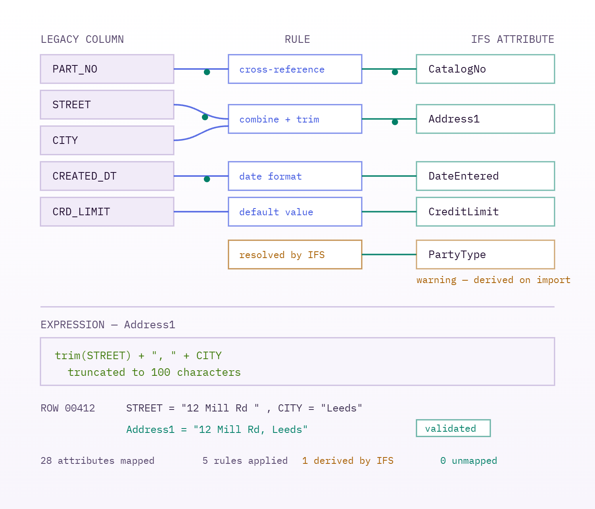
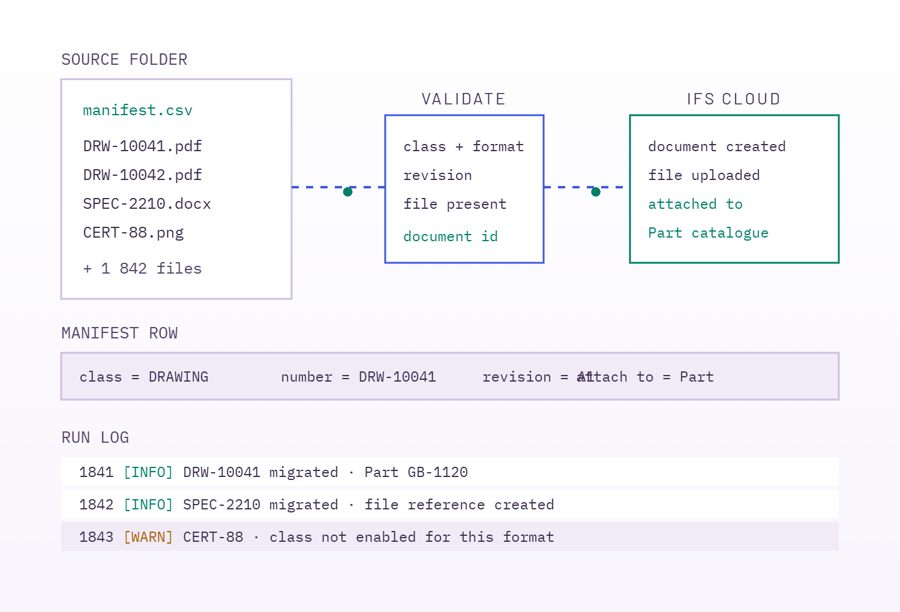
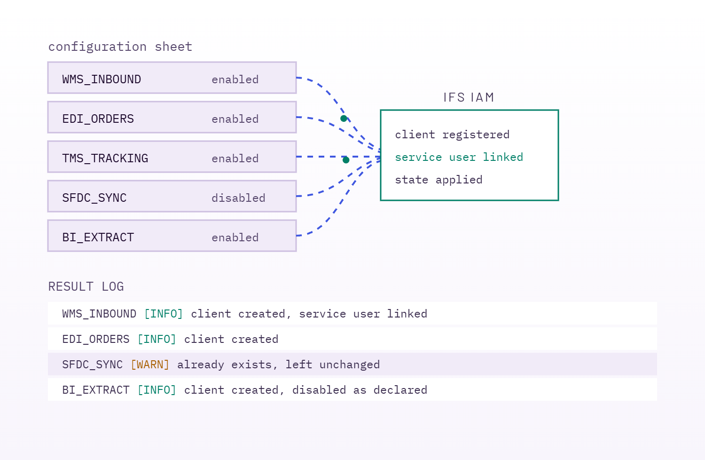
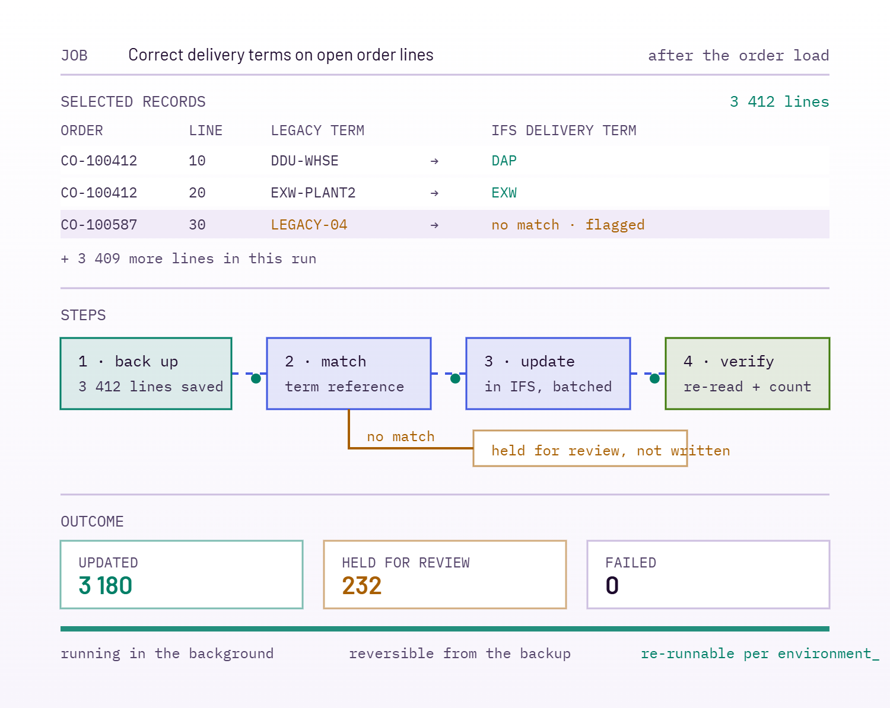
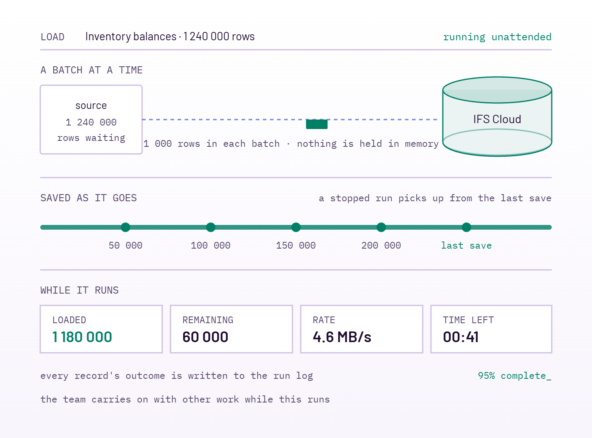

Entity dependency tracking
See which migration entities depend on which, so containers load in an order IFS will accept and a re-run doesn't orphan records.
The right-sized migration tool for IFS Cloud: connect the source you already have, map it to IFS entities, and catch every bad row before it reaches the target — at full volume, from a desktop tool your delivery team runs directly. Seamless. Reliable. Scalable.

The challenge
IFS data migrations involve intricate setups, require specialist knowledge and present validation challenges at every entity. Without the right tooling and visibility, these projects absorb weeks that were budgeted for configuration and testing.
Each migration entity carries its own key structure, dependencies and mandatory attributes. Loading them in the wrong order, or without the reference data in place, fails deep in the run.
cost: repeated load attempts
Getting data into IFS reliably means knowing the projections, the LU model and the rules IFS applies on import — knowledge that usually sits with one or two people on the project.
cost: a single point of dependency
Spreadsheets accept anything. Errors surface only once records reach IFS, in volumes that are slow to unpick and expensive to reload.
cost: rework late in the plan
In practice
A migration is a sequence of loads, each with its own shape, volume and dependencies. These are the ones NayoDM is built around, and the work each carries beyond moving rows.
| Migration object | Typical source | Typical scale | What the load has to handle |
|---|---|---|---|
| Customer master and addresses | Legacy ERP or CRM extract | 10k – 80k rows | Address composition from separate columns, country and currency cross-reference, duplicate detection before load. |
| Supplier master and terms | Legacy ERP, database extract | 5k – 20k rows | Payment and delivery term mapping, tax registration formats, bank and remittance detail validation. |
| Part catalogue and structures | PLM export or legacy ERP | 50k – 500k rows | Part numbering cross-reference, unit-of-measure conversion, parent-before-child sequencing across structure levels. |
| Inventory balances and locations | Warehouse system extract | 100k – 1M rows | Site and warehouse mapping, lot and serial handling, a cut-off that has to match the physical count. |
| Open purchase and customer orders | Legacy ERP, live database read | 5k – 50k lines | Header and line dependencies, partially delivered quantities, price and discount rules carried across. |
| Drawings, specifications, certificates | File share with a manifest | 1k – 100k files | Document class and format validation, revision handling, attachment to the part or order each file belongs to. |
| Integration access | Configuration sheet | 10 – 100 clients | Client and service user creation per environment, enabled state applied consistently across the landscape. |
Pre-flight validation
IFS data migrations involve intricate setups, specialist knowledge and validation that is easy to get wrong. Without the right tooling and visibility, teams find the bad rows after the load — and the project pays for it in delays and cost.
NayoDM runs two passes before a single record moves. The first checks every row against the target's own rules. The second is the one that catches most real migration failures: it collects the values your data refers to — country codes, delivery terms, units, customer groups — and confirms each one already exists in IFS.


Import sources
Where your data lives today decides how a migration starts. NayoDM takes a file when that is all you have, and connects directly to an IFS environment when you have one — so nobody has to export, tidy and hand around spreadsheets to move data between systems.
Connect to an IFS Cloud environment and pick the data you need from it. Useful for moving between environments, topping up a test system, or bringing data across from another IFS Cloud tenant.
Read straight from the IFS Applications system you are leaving. The data comes from the source itself, so what you migrate is what is live on the day — not last month's export.
Take a workbook as the business filled it in. Choose the sheet and the row the data starts on, and the column names are picked up for you.
An export from any other system — a warehouse tool, a spreadsheet, an old database report — loaded the same way as everything else.
Mapping & transformation
Real migrations are rarely one-to-one. A single IFS attribute is often assembled from several legacy columns, resolved through a cross-reference table, reformatted, defaulted where the source is empty, or left for IFS to derive at import time. NayoDM holds all of that in the mapping itself, so the rule travels with the project and can be reviewed, corrected and repeated in the next environment.


Documents
Point NayoDM at a document folder and its manifest, and the files are migrated as IFS documents — the class and format validated first, the document created, the file uploaded, and the result attached to the business object the manifest names.
IAM client migration
Interfaces need their access clients in place before the first message flows. NayoDM creates them from a single configuration sheet — identifier, description, service user and enabled state — and records the outcome of every row, so access configuration is reproducible across every environment in the landscape.


Workflow engine
The load is rarely the end of it. Orders arrive carrying delivery terms the old system used and IFS does not recognise; balances need adjusting after the count; a batch of records has to be released once the data behind it is in place. Doing that by hand means someone in a screen for a week — and no record of what was changed.
A workflow does it as one job: select the affected records, take a backup, apply the rule, and check the result — with every record's outcome written down and the whole run reversible if the rule was wrong.

Built for real volumes
Inventory balances, order lines and part catalogues run into the hundreds of thousands of records. NayoDM takes them a batch at a time and saves its position as it goes, so a large load is something the team starts and checks on rather than sits and watches.
See it run
A walkthrough of NayoDM in use: connecting an IFS environment, choosing a source, mapping it to the target, running the checks and loading the records — the same sequence your team follows on every migration object.
Prefer a session against your own data? Book a demo.
The rest of the toolkit
A migration is never one table. NayoDM covers the dependencies, the documents and the environments around the load.
See which migration entities depend on which, so containers load in an order IFS will accept and a re-run doesn't orphan records.
Publish a workbook that already matches the target entity, so data collection starts in the right shape and returns ready to load.
Custom fields defined in IFS Cloud are read from the target's metadata and mapped exactly like standard attributes.
Query staged data before and after a load, with live counts and quick filters for the rows IFS accepted or rejected.
Keep IFS Cloud environments and legacy IEE data sources side by side, switch the active target deliberately, and always see which one is live.
Every import, document run and workflow execution is recorded with its outcome, readable in the tool and exportable for audit.
Why choose NayoDM
NayoDM comes out of delivery work, not a product lab. It is lightweight, streamlined and scalable, and it keeps migration aligned with the IFS Evergreen strategy — faster, more precise data movement with minimal disruption to your application.
Built by experts who understand IFS end-to-end, NayoDM bridges technical precision with practical usability — a smarter, reliable and right-sized solution for teams implementing IFS Cloud.
Nayo Technologies — IFS delivery teamAI features landing in NayoDM 3.0.0.
…and more.
NayoAI writes the JavaScript transform or Oracle SQL for a field from a plain-language description, drawing on your own migration knowledge base. Every result is run against sample rows and repaired automatically before you see it, and nothing is applied until you confirm.
Bring one migration object and a representative extract. We will map it, check it and load it into a sandbox environment during the session.